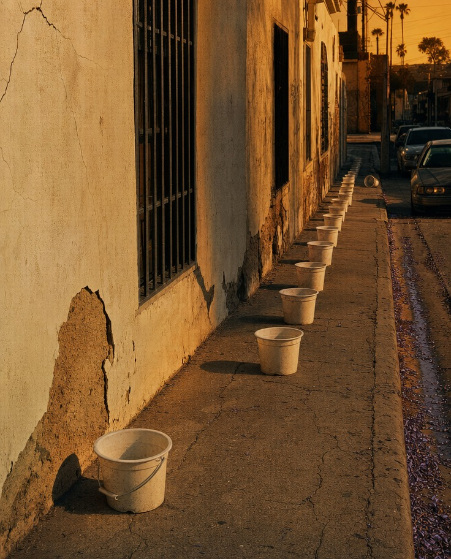
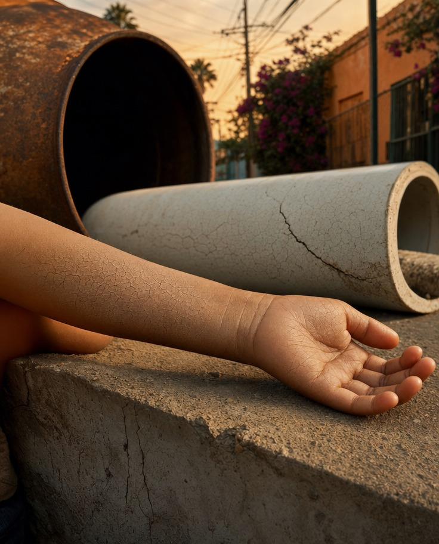
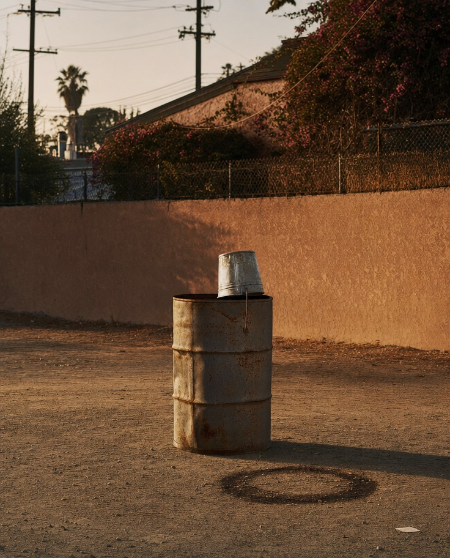
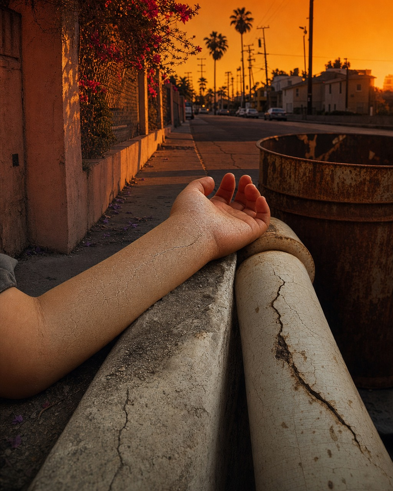
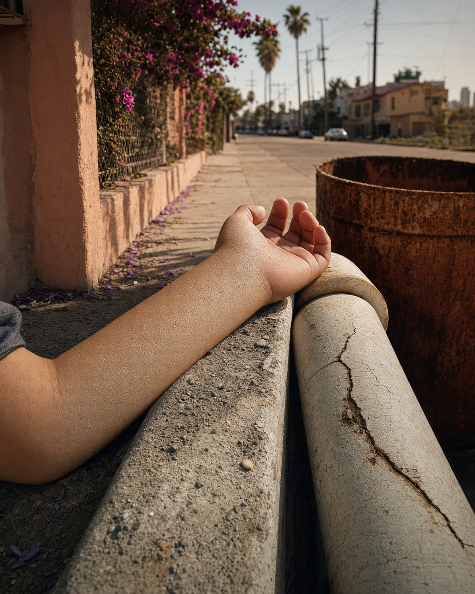

📰
Fetch News
50 → 46 stories
›
✍️
Assemble Prompt
rank · anchor · 3 scenes
›
🎨
Divergence
3 drafts 512×640
›
🔀
Select Direction
draft #2 chosen
›
🔁
Convergence
3 passes 1024×1280
›
⭐
Select Winner
#4 · first pass wins
›
📊
Build + Push
dashboard · git
"Same Thirst, Same Crack"
Selected
Convergence Pass 1
1024×1280
GPT Image 2
"The pipe as both tomb and water-conduit directly activates the anchor's destroyed water infrastructure, the indifferent passersby literalize the 'offering them nothing' of the peace deal, and the sunset light over palm trees delivers the cruel beauty of a place the world considers elsewhere."
File: vince_20260616_004_iran-deal-end-war.jpg
Iteration: 4 of 6 — first convergence pass
14+
Iran/peace deal variants
The 46 candidate stories included more than a dozen articles about the US–Iran peace deal signed that morning — the live blog, multiple reaction pieces, analysis, a G7 sidebar. The pipeline's story-ranking and silence-tracker logic had to select a single anchor rather than the loudest headline.
The Guardian · World · 2026-06-16
'Everyone is angry for different reasons': scepticism in Iran as peace deal nears
In the rural town of Sirik, in southern Iran, temperatures over the past week have climbed to 45°C (113°F), and residents were still queueing to fill buckets of water days after US strikes reportedly damaged two drinking water facilities serving nearby villages. Amid the water shortages and the looming fear of war came news of a possible deal between Washington and Tehran. But for those struggling to pick up the pieces in the aftermath, the announcement brought little relief. "I fear the uncertainty surrounding [the peace deal]," said Nahid*, a mother in Sirik, who described how villagers were queueing for water in the same heat that had forced children indoors for weeks.
Anchor — irreducible moment
"Days after strikes damaged their water facilities, villagers in a 45°C town queue with buckets while a dehydrated four-year-old cries, as news of an oil-for-peace deal arrives offering them nothing."
Symbol field — objects extracted
buckets
queue
cracked water pipe
punishing heat
empty oil drum
child's chafed skin
The pipeline correctly avoided the headline-level framing (Trump, Hormuz, Netanyahu) in favour of the Sirik passage — the human body inside the geopolitical event. The story chosen for displacement was not the live blog but the granular reaction piece where the deal's inadequacy is felt at the level of a queueing child rather than at the level of a signing ceremony.
Three divergent scene ideas were generated from the anchor and symbol field, each translating the event into South LA register:
- Scene A — The bucket queue: a recession of empty white buckets along a cracked stucco wall, merciless overhead noon light, no people
- Scene B — Skin and pipe: a four-year-old's chapped forearm resting across a concrete ledge, cracks in skin rhyming with cracks in a nearby pipe
- Scene C — Drum and lid: an empty steel drum with an undersized tin bucket propped upside-down on top — futility dressed as solution
Three scenes generated simultaneously at draft resolution (512×640). Each uses the same anchor but arrives via a different object from the symbol field. Vision analysis, blind reverse test, and trace scoring run after each render.

A long recession of white plastic buckets along a cracked stucco wall — each spaced exactly one footstep apart, the line receding the full length of the frame. The first bucket is bone-dry, its bottom filmed with dust. Every bucket holds nothing but its own shadow. No people. One distant bucket has tipped on its side. The queue continues past it anyway.
Vision analysis
A long recession of white plastic buckets lines a cracked sidewalk against a heavily deteriorated stucco wall, beginning large in the lower-left foreground and diminishing in sharp perspective toward a warm-lit vanishing point. The wall's decay — plaster falling away to expose raw mud-brick — reads as structural thirst, the building itself desiccating in parallel with the people who set the buckets down. The light is not the flat overhead noon the prompt specified but rather a raking late-afternoon orange — it aestheticizes the queue rather than exhausting the viewer.
Accident
The wall's decay — plaster falling away to expose raw mud-brick beneath — reads as structural thirst, the building itself desiccating in parallel with the people who set the buckets down. The prompt asked for nothing but the wall got desperate anyway.
Revision note
The golden-hour light is emotionally seductive where it should be merciless — it aestheticizes the queue rather than exhausting the viewer. Change the light to flat white overhead noon, which shortens shadows to stubs and removes the beauty that is currently absorbing the weight the anchor needs to land.
Blind reverse test — no caption, guess the event
"A long row of empty white buckets lines a crumbling sidewalk along a weathered building at golden hour." — Event guessed: water shortage crisis
Trace 2/5 — too direct on water scarcity
Image generation prompt
A child's-size plastic bucket sits at the front of a long queue of identical buckets, each spaced exactly one footstep apart along a cracked stucco wall, the line receding the full length of the frame. The first bucket is bone-dry, its bottom filmed with the same pale dust that coats the wall behind it; every bucket holds nothing but its own shadow, shortened to a stub by the overhead noon sun. There are no people — only the buckets, arranged with the patience of those who set them down hours ago to hold a place. The afternoon light is flat and merciless, bleaching the colored plastic toward white, and the spacing of the line reads as a wait that has outlasted the reason for waiting. One distant bucket has tipped on its side. The queue continues past it anyway.

A four-year-old's bare forearm rests palm-up across a sun-warmed concrete ledge, the skin across the inner elbow and wrist chapped into a fine map of cracks — indistinguishable in close looking from the split running through the glazed surface of a pipe lying just beyond the hand. The two surfaces, skin and ceramic conduit, meet at the picture's center where the focus is sharpest, dust gathered identically in both sets of fissures.
Vision analysis
The skin of the inner forearm and wrist is visibly chapped, cracked into a fine reticulated map of fissures that catches dust in its channels, the surface reading simultaneously as skin and as parched earth. Two large concrete pipes lie horizontal on the ground, their cylindrical forms receding into soft focus while their surface fractures rhyme precisely with the cracks on the child's skin. The crack running across the nearest pipe's surface and the crack-map on the child's forearm converge at the frame's center with enough visual coherence that the comparison lands without annotation.
Accident
The dust settled identically into the pipe's surface crack and the skin's fissure lines — an unplanned material rhyme that the camera caught rather than constructed, and it is the image's most honest moment.
Revision note
The light is amber-golden rather than the prompt's "high white of midday casting almost no shadow" — this warmth slightly romanticizes the scene. Shift the light to bleached, shadowless overhead white to restore the flatness and refusal that the anchor requires.
Blind reverse test
"A dry, cracked forearm rests on a concrete ledge near large drainage pipes at sunset." — Event guessed: California drought crisis
Trace 2/5 — reads drought but not geopolitics
Image generation prompt
A four-year-old's bare forearm fills most of the frame, resting palm-up across a sun-warmed concrete lip, the skin across the inner elbow and wrist chapped into a fine map of cracks — and those cracks, in their branching and their dryness, are indistinguishable in close looking from the split running through the glazed surface of a pipe lying just beyond the hand. The two surfaces, child's skin and ceramic conduit, meet at the picture's center where the focus is sharpest, dust gathered identically in both sets of fissures. The light is the high white of midday, casting almost no shadow, refusing to soften anything. Behind, thrown out of focus, the dull curve of an empty drum holds the only deep tone in the frame. Nothing here is exaggerated in scale; the rhyme is found, not staged. The longer the eye stays, the harder it is to say which surface came first.

An empty steel drum stands alone in a swept dirt yard, dented and rust-bloomed. Someone has propped a battered tin bucket upside-down over its open mouth like a lid that fits nothing — the bucket far too small, perched at a slight tilt. Heat shimmer rises off the drum's shoulder. The yard is bare except for a single dark ring stained into the dirt where something once stood fuller.
Vision analysis
The spatial mismatch between drum and bucket is immediate and precise: the bucket sits atop rather than inside, a gesture of futility wearing the costume of solution. Behind the drum, a stucco wall catches warm golden-hour light in a terracotta wash, and above it bougainvillea bleeds dark magenta against the fence line — an incongruous lushness above the bareness below. The dark stain ring in the foreground dirt — where something once sat, or something once spilled — arrived exactly as described and reads as an absence that preceded the current one.
Accident
The bougainvillea's flowering abundance directly above the empty drum creates an unsolicited vertical irony — water denied below, botanical excess above — that the prompt never requested and that sharpens the register of exhaustion without any figure present to carry it.
Blind reverse test
"A rusted metal barrel with a small galvanized bucket balanced on top sits in a dry, dusty lot against a stucco wall." — Event guessed: California drought water restrictions
Trace 1/5 — reads abstract / domestic rather than geopolitical
Image generation prompt
An empty steel drum stands alone in a swept dirt yard, dented and rust-bloomed, and someone has propped a battered tin bucket upside-down over its open mouth like a lid that fits nothing — the bucket far too small for the drum, perched there at a slight tilt. Heat shimmer rises off the drum's shoulder in the noon glare, visible as a faint warping of the wall behind it. The yard is bare except for a single dark ring stained into the dirt where the drum once sat fuller, or where another stood beside it. The bucket's handle hangs straight down, motionless, throwing a thin shadow no longer than a finger. There are no figures and no water anywhere in the frame; the two containers, one made to hold what is carried and one made to hold what is bargained, sit nested and useless in the flattening light.
Direction selected — Draft 002 advances
Draft 002 (skin and pipe) chosen for convergence. The skin–pipe crack rhyme is the most formally strong accident in the divergence set, and the scene contains the anchor's human body (the dehydrated child) without illustrating it — the arm is present, the child is not. The material double (skin = parched earth = cracked infrastructure) is an expandable metaphor that can absorb the geopolitical content without collapsing into illustration. Draft 001's bucket queue is too declarative; Draft 003's drum is formally interesting but loses the body.
Three convergence passes at full resolution (1024×1280), each using the Draft 002 scene prompt as base. After each pass, a pairwise comparison selects the stronger image to carry forward. A final round-robin tournament determines the winner from all three convergence renders.
Vision analysis
A concrete drainage pipe — sand-colored, cracked longitudinally — lies on a sidewalk curb in the left-center foreground, its open mouth facing the viewer at a slight angle. From inside or beneath the pipe emerges a child's bare forearm, resting palm-upward on the concrete lip, fingers loosely open. Across the inner wrist the skin displays chapping that rhymes visually with the pipe's own crack. Scattered across the sidewalk behind are fallen purple jacaranda blossoms — dozens of them, small, limp — reading simultaneously as beautiful and as litter. In the middle distance, two figures walk away from camera: a smaller child running slightly ahead, a larger adult following, both silhouetted against a warm golden-hour sky. Palm trees and power lines recede toward a setting sun.
Accident
The jacaranda petals scattered across the sidewalk — unprompted, unscripted — function as a third texture in the crack-skin-pipe rhyme: dried, fallen, spent. They carry their own exhaustion.
Blind reverse test
"A human arm extends from inside a concrete drainage pipe lying on a city sidewalk at sunset, with fallen jacaranda petals scattered around and pedestrians walking in the distance." — Event guessed: urban homelessness crisis
Trace 1/5 — displaced; reads LA, not Iran

Vision analysis
A bare forearm rests palm-open across a weathered concrete ledge, the inner wrist and forearm displaying a pronounced network of fine cracked-skin texture that mirrors almost exactly the fracture running longitudinally along a glazed pipe lying parallel just beyond. The two cracked surfaces converge at the image's sharpest focal point, dust settling identically into both sets of fissures. A rusted cylindrical vessel occupies the right foreground, its oxidized texture completing a triad of decay: skin, pipe, steel. The light is a deep amber-orange sunset, casting long warm shadows. The street depth beyond — low stucco walls, parked cars, palms — reads unmistakably as South LA.
Accident
The bougainvillea blooming against the chain-link in the upper left — vivid red against the orange sky — arrives as an unrequested counterweight, beauty persisting alongside infrastructure failure and bodily dehydration, deepening the cruelty of the image without comment.
Revision note
The light is the single departure — amber sunset versus the prompt's specified flat midday white. That warmth softens the image's brutality and aestheticizes what should feel clinical and pitiless. Next iteration: overhead noon light — shadowless, bleaching — so the cracks read as damage, not texture.
Blind reverse test
"A dry, cracked forearm rests on a weathered concrete ledge under an intense orange sky with palm trees." — Event guessed: LA wildfires and drought crisis

Vision analysis
A child's bare forearm — skin tone warm brown, inner surface chapped into a fine reticulated map of cracks — rests across a sun-heated concrete ledge. The cracked glaze of a painted pipe runs parallel just beyond the arm, and the two surfaces mirror each other so precisely in their fissure patterns that the eye must work to separate them. A rusted cylindrical vessel occupies the right foreground, its oxidized texture completing a triad: skin, pipe, metal. Behind and receding: a pink stucco wall, bougainvillea in magenta bloom, a sidewalk in warm raking light. The street depth beyond gives the image breath, a city continuing indifferently.
Accident
The bougainvillea — not asked for — reads as brutal irony: extravagant, hydrated pink bloom directly above desiccated skin, the landscape well-watered while the body is not.
Revision note
The light is the one technical failure: warm and directional, not flat midday white. That softness makes the skin cracks beautiful rather than clinical, risking aestheticizing the suffering. Next: overhead noon, shadowless, bleaching — so the cracks read as damage.
Blind reverse test
"A person's dry, cracked arm rests on a concrete curb beside a rusty metal container on a sun-baked Los Angeles sidewalk." — Event guessed: homelessness crisis in Los Angeles
Two independent judges — Claude and GPT-4o — vote pairwise. After each convergence pass a pass-improve vote advances the stronger image into the next round. A final round-robin between all three convergence renders decides the winner. Both judges see only the images with no metadata; votes are cast independently and then compared.
Pass 1 check — Render 004 vs. Divergence template (002)
Does the first convergence pass improve on the direction draft?
Winner: 004 — convergence pass 1 advances over divergence draft
Pass 2 check — Render 005 vs. current champion (004)
"Image 2's vivid use of color and texture better conveys the dire circumstances of the narrative, offering more potential for emotional development."
Winner: 005 (GPT-4o · 1–0; Claude abstained)
GPT → 005
Claude abstained
Pass 3 check — Render 006 vs. current champion (005)
"Image 1's firestorm sky fuses the child's dehydrated, cracking skin with the scorched environment into a single indivisible image of systemic collapse — the body and the world share the same wound."
Winner: 005 (unanimous · 2–0)
Claude → 005
GPT → 005
004 vs. 005
004 ★
1
005
0
GPT → 004
Claude abstained
"Image 1 more effectively embodies the anchor by highlighting the contrast between personal hardship and societal indifference, offering dynamic storytelling potential."
004 vs. 006
004 ★
2
006
0
Claude → 004
GPT → 004
"Image 1 holds the more generative accident — the pipe as both tomb and water-conduit directly activates the anchor's destroyed water infrastructure, the indifferent passersby literalize the 'offering them nothing' of the peace deal, and the sunset light over palm trees delivers the cruel beauty of a place the world considers elsewhere."
005 vs. 006
005 ★
2
006
0
Claude → 005
GPT → 005
"Image 1's wildfire sky fuses the political catastrophe of the anchor — burned infrastructure, 45°C heat, oil deals — directly into the body itself, creating a generative accident where the child's arm becomes indistinguishable from cracked earth under a burning sky, which is a specific, expandable metaphor."
Final selection — Render 004
Tournament standings: 004 wins 2 of 2 matches · 005 wins 1 of 2 · 006 wins 0 of 2
Winner: 004 — Convergence Pass 1. The first convergence render outperformed both subsequent passes. The jacaranda petals (unscripted accident) and the two figures walking away (indifference literalized) give 004 a compositional specificity that 005 and 006's more saturated color cannot match as generative material. Vince titled it "Same Thirst, Same Crack."
Light correction not achieved. All six renders came out with warm golden-hour/sunset light despite the prompt specifying "flat white overhead noon." The revision notes for 001, 002, 005, and 006 all flag this. GPT Image 2 appears to default to warm-directional light regardless of the explicit instruction. The pipeline's revision loop identified the problem correctly after each pass but the model did not correct it; the convergence passes continued to produce amber/orange skies. Future consideration: add a lighting constraint to the style-state.json, or experiment with explicit negative prompting.
First convergence pass won. Iterations 005 and 006 added saturation and drama but lost the compositional specificity that made 004 the strongest image. The jacaranda petals and receding figures in 004 were the definitive accidents — they did not reappear with the same clarity in later passes. This confirms that refinement is not always improvement: the pipeline correctly surfaced this via tournament rather than assuming the last render was best.
Story selection. With 14+ Iran/peace deal articles in the candidate pool, the pipeline bypassed the treaty-level framing (Trump, Hormuz, Netanyahu) and selected the Sirik water crisis passage — the human body inside the geopolitical event. This is the correct behavior: the anchor is a dehydrated four-year-old in 45°C heat, not an MOU signing ceremony.
18:27 UTC
fetch_news.js complete — 46 stories
assemble_prompt.js begins
18:27 UTC
Story selected — Sirik / scepticism in Iran
Anchor extracted, symbol field built, 3 scenes generated
18:27 UTC
Divergence — Render 001 (bucket queue)
18:30 UTC
Divergence — Render 002 (child's forearm + pipe)
18:33 UTC
Divergence — Render 003 (drum + undersized lid)
18:33 UTC
Direction selected — Draft 002 advances to convergence
18:38 UTC
Convergence Pass 1 — Render 004 (1024×1280)
Pass-improve: 004 beats divergence template
18:44 UTC
Convergence Pass 2 — Render 005 (1024×1280)
Pass-improve: 005 beats 004 (GPT only; Claude abstained)
18:48 UTC
Convergence Pass 3 — Render 006 (1024×1280)
Pass-improve: 005 holds over 006 (unanimous)
18:49 UTC
Final round-robin — tournament complete
Winner: 004. Committed to shared/artworks/ and pushed.
DeYaanga · Run report · 2026-06-16 (PDT) · Pipeline dashboard (internal)